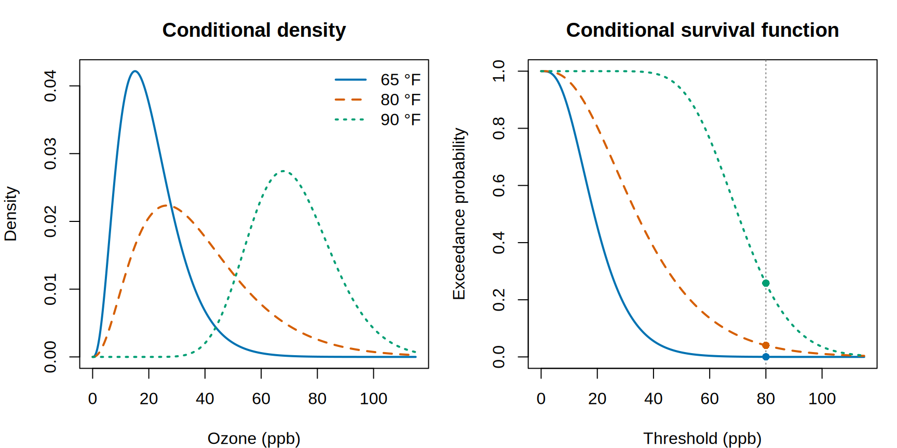
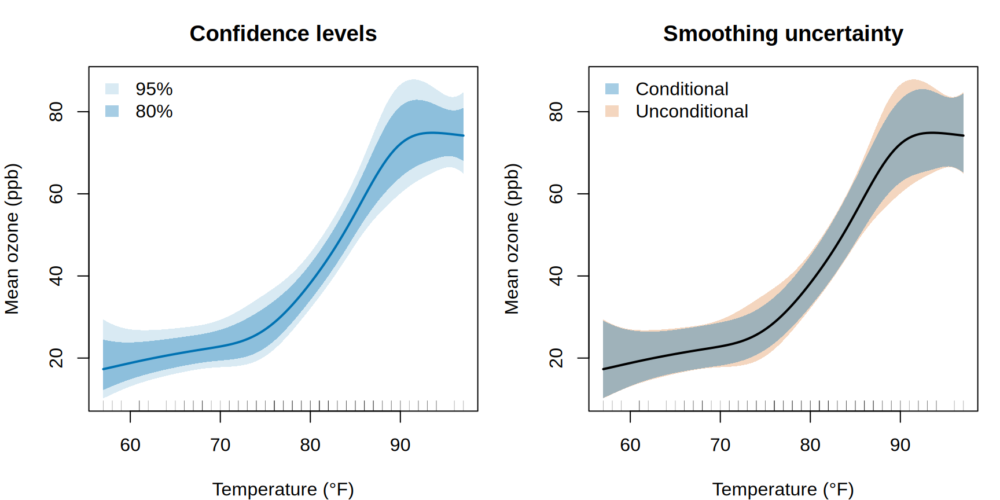
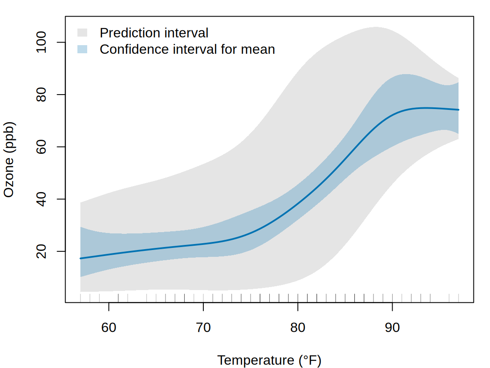

library("gamlss2")
air <- na.omit(airquality[, c("Ozone", "Temp", "Wind")])
set.seed(123)
i <- sample(nrow(air), floor(0.8 * nrow(air)))
train <- air[i, ]
test <- air[-i, ]
m <- gamlss2(
Ozone ~ s(Temp) + s(Wind) | s(Temp),
data = train,
family = GA,
trace = FALSE
)Prediction and Uncertainty
A fitted gamlss2 model predicts the entire conditional response distribution. Means, quantiles, and event probabilities can all be obtained from this distribution through the same interface.
This vignette shows how to predict at new covariate values and construct intervals. The main distinction is between a confidence interval for an estimated quantity, such as the mean, and a prediction interval for an individual future response. Model specification and fitting are introduced in First Steps. We use the same ozone model as Bayesian GAMLSS, fitted here by penalized likelihood.
1 Data and model
We model daily ozone concentration in the airquality data using temperature and wind speed. We reserve 20% of the complete observations for a simple prediction check at the end.
The Gamma family GA has two parameters: mu, the conditional mean, and sigma, the conditional coefficient of variation. Both use a log link. The first right-hand side models mu; the second models sigma. Thus, temperature can change both the mean and relative spread of ozone, while wind enters the mean predictor.
2 Predicting at new covariate values
Each row of newdata supplies the covariates for one prediction. Here we consider temperatures of 65, 80, and 90°F at a wind speed of 10 mph. The response is not required.
weather <- data.frame(Temp = c(65, 80, 90), Wind = 10)
d <- predict(m, newdata = weather)
d 1
"GAMLSS2 GA(mu = 20.67, sigma = 0.5193)"
2
"GAMLSS2 GA(mu = 37.68, sigma = 0.5463)"
3
"GAMLSS2 GA(mu = 71.04, sigma = 0.2086)" By default, predict() returns a vector of distributions using the distributions3 interface, one per row of weather. We can immediately calculate means, quantiles, and probabilities.
q <- quantile(d, probs = c(0.5, 0.9), elementwise = FALSE)
data.frame(
weather,
mean = mean(d),
median = q[, 1],
q90 = q[, 2],
prob_above_80 = 1 - cdf(d, 80)
) Temp Wind mean median q90 prob_above_80
1 65 10 20.67289 18.84711 35.06653 0.0002292382
2 80 10 37.67663 34.00186 65.27721 0.0404160138
3 90 10 71.04114 70.01330 90.57210 0.2579337431The median divides each fitted distribution in half; the 90th percentile is exceeded with probability 0.1 under the fitted model. The last column gives the probability of ozone exceeding 80 ppb, an illustrative threshold. elementwise = FALSE evaluates both quantiles for every distribution: rows correspond to weather, columns to the requested probabilities.
Other useful summaries are sqrt(variance(d)) for the conditional standard deviation and cdf(d, 80) - cdf(d, 40) for the probability of ozone between 40 and 80 ppb. These describe variation in the response, treating the fitted parameters as fixed.
To compare the three temperatures over a range of ozone concentrations, plot the density and the survival function. The height of each survival curve at 80 ppb gives the exceedance probability calculated above.
wcol <- c("#0072B2", "#D55E00", "#009E73")
yg <- seq(0.01, max(quantile(d, 0.995)), length.out = 500)
densities <- pdf(d, yg, elementwise = FALSE)
survival <- 1 - cdf(d, yg, elementwise = FALSE)
op <- par(mfrow = c(1, 2), mar = c(4, 4, 3, 1), cex = 1)
matplot(yg, t(densities), type = "l", lty = 1:3, lwd = 2,
col = wcol, xlab = "Ozone (ppb)", ylab = "Density",
main = "Conditional density")
legend("topright", paste(weather$Temp, "°F"), col = wcol,
lty = 1:3, lwd = 2, bty = "n")
matplot(yg, t(survival), type = "l", lty = 1:3, lwd = 2,
col = wcol, ylim = c(0, 1),
xlab = "Threshold (ppb)", ylab = "Exceedance probability",
main = "Conditional survival function")
abline(v = 80, lty = 3, col = "gray50")
points(rep(80, nrow(weather)), 1 - cdf(d, 80), col = wcol, pch = 16)
par(op)At higher temperatures, the fitted distribution shifts toward higher ozone concentrations. Its shape also changes: at 90°F it is more concentrated around its mean than at 80°F. Comparing only the means would miss this difference.
2.1 Choosing the prediction scale
Use type to select the quantity returned by predict().
| Call | Result |
|---|---|
predict(m, newdata = weather) |
Fitted response distributions |
predict(m, newdata = weather, type = "response") |
Conditional response means |
predict(m, newdata = weather, type = "parameter") |
A data frame of mu and sigma |
predict(m, newdata = weather, parameter = "mu", type = "link") |
Additive predictor for mu, here the log mean |
predict(m, newdata = weather, parameter = "mu", type = "terms") |
Individual contributions to that additive predictor |
Specifying parameter without type selects parameters on their natural scale. For example, the following returns only sigma.
predict(m, newdata = weather, parameter = "sigma") 1 2 3
0.5193190 0.5463182 0.2086112 For GA, mu is the mean, so parameter = "mu", type = "response", and mean(d) agree. This is family-specific: mu need not be the response mean in other families. Omitting newdata gives predictions for the fitted data.
3 Confidence intervals
To see how the expected ozone concentration changes with temperature, we construct a prediction grid and hold wind speed at its training median. Supplying level = 0.95 requests approximate pointwise Wald confidence intervals.
nd <- data.frame(
Temp = seq(min(train$Temp), max(train$Temp), length.out = 100),
Wind = median(train$Wind)
)
ci <- predict(m, newdata = nd, parameter = "mu", level = 0.95)
head(data.frame(nd, fit = ci$fit, lower = ci$lower, upper = ci$upper)) Temp Wind fit lower upper
1 57.00000 9.7 17.30407 10.28401 29.11615
2 57.40404 9.7 17.50200 10.68739 28.66183
3 57.80808 9.7 17.70166 11.09278 28.24801
4 58.21212 9.7 17.90250 11.49655 27.87787
5 58.61616 9.7 18.10388 11.89500 27.55365
6 59.02020 9.7 18.30513 12.28461 27.27623The result contains fit, se.fit, lower, and upper. For this model, the bounds are calculated on the log-mean scale and transformed back, keeping them positive. Each interval describes uncertainty in the mean at one temperature. By default, the calculation holds the fitted smoothing parameters fixed.
3.1 Smoothing-parameter uncertainty
The degree of smoothness is itself estimated from the data. Use unconditional = TRUE to include approximate uncertainty from this step. Here, unconditional refers to the smoothing parameters; predictions remain conditional on the supplied temperature and wind speed.
A vector of confidence levels requests several intervals in one call. The bounds are then lists named by confidence percentage.
ciu <- predict(m, newdata = nd, parameter = "mu",
level = c(0.8, 0.95), unconditional = TRUE)
lower95 <- ciu$lower[["95%"]]
upper95 <- ciu$upper[["95%"]]First compare the 80% and 95% intervals at each temperature. Then hold the confidence level at 95% to see how much smoothing-parameter uncertainty contributes to the width of the interval.
op <- par(mfrow = c(1, 2), mar = c(4, 4, 3, 1), cex = 1)
plot(nd$Temp, ciu$fit, type = "n", ylim = range(lower95, upper95),
xlab = "Temperature (°F)", ylab = "Mean ozone (ppb)",
main = "Confidence levels")
polygon(c(nd$Temp, rev(nd$Temp)), c(lower95, rev(upper95)),
col = adjustcolor(wcol[1], 0.15), border = NA)
polygon(c(nd$Temp, rev(nd$Temp)),
c(ciu$lower[["80%"]], rev(ciu$upper[["80%"]])),
col = adjustcolor(wcol[1], 0.35), border = NA)
lines(nd$Temp, ciu$fit, col = wcol[1], lwd = 2)
rug(train$Temp, col = adjustcolor(1, 0.3))
legend("topleft", c("95%", "80%"),
fill = c(adjustcolor(wcol[1], 0.15), adjustcolor(wcol[1], 0.35)),
border = NA, bty = "n")
plot(nd$Temp, ciu$fit, type = "n", ylim = range(lower95, upper95),
xlab = "Temperature (°F)", ylab = "Mean ozone (ppb)",
main = "Smoothing uncertainty")
polygon(c(nd$Temp, rev(nd$Temp)), c(lower95, rev(upper95)),
col = adjustcolor(wcol[2], 0.25), border = NA)
polygon(c(nd$Temp, rev(nd$Temp)), c(ci$lower, rev(ci$upper)),
col = adjustcolor(wcol[1], 0.35), border = NA)
lines(nd$Temp, ciu$fit, lwd = 2)
rug(train$Temp, col = adjustcolor(1, 0.3))
legend("topleft", c("Conditional", "Unconditional"),
fill = c(adjustcolor(wcol[1], 0.35), adjustcolor(wcol[2], 0.25)),
border = NA, bty = "n")
par(op)The 95% band is wider than the 80% band because it uses a higher confidence level. Including smoothing-parameter uncertainty widens the 95% intervals modestly in this example. The rug shows the training temperatures.
4 Prediction intervals
A prediction interval describes the range of an individual future response. The 2.5% and 97.5% quantiles enclose the central 95% of each fitted Gamma distribution.
dn <- predict(m, newdata = nd)
pi <- quantile(dn, probs = c(0.025, 0.975), elementwise = FALSE)
head(pi) q_0.025 q_0.975
1 4.458919 38.69672
2 4.491468 39.19617
3 4.524650 39.69905
4 4.558954 40.20218
5 4.594858 40.70217
6 4.632832 41.19542Equivalently, use quantile(m, newdata = nd, probs = c(0.025, 0.975)). These prediction intervals treat the estimated model as fixed. Their coverage on new data depends on how well the model describes the response distribution.
Overlay the two intervals at median wind speed. The distance between the outer bounds shows how much daily ozone can vary even where the model estimates the mean precisely.
par(mar = c(4, 4, 1, 1))
plot(nd$Temp, ciu$fit, type = "n", ylim = range(pi, lower95, upper95),
xlab = "Temperature (°F)", ylab = "Ozone (ppb)")
polygon(c(nd$Temp, rev(nd$Temp)), c(pi[, 1], rev(pi[, 2])),
col = "gray90", border = NA)
polygon(c(nd$Temp, rev(nd$Temp)), c(lower95, rev(upper95)),
col = adjustcolor(wcol[1], 0.25), border = NA)
lines(nd$Temp, ciu$fit, col = wcol[1], lwd = 2)
rug(train$Temp, col = adjustcolor(1, 0.3))
legend("topleft", c("Prediction interval", "Confidence interval for mean"),
fill = c("gray90", adjustcolor(wcol[1], 0.25)), border = NA, bty = "n")
4.1 Including coefficient uncertainty
For quantities that combine several parameters, such as a response quantile, coefficient draws provide a general way to propagate estimation uncertainty. FUN = identity retains one vector of distributions per joint coefficient draw. We evaluate the 90th percentile within each draw, then take quantiles across draws to obtain an approximate confidence interval for that percentile.
draws <- predict(m, newdata = weather, FUN = identity,
R = 2000, seed = 1328, unconditional = TRUE)
q90 <- sapply(draws, quantile, probs = 0.9)
bounds <- t(apply(q90, 1, quantile, probs = c(0.025, 0.975)))
data.frame(weather, q90 = quantile(d, 0.9),
lower = bounds[, 1], upper = bounds[, 2]) Temp Wind q90 lower upper
1 65 10 35.06653 26.58348 46.94495
2 80 10 65.27721 53.38128 80.30096
3 90 10 90.57210 77.34183 106.50003Rows of q90 correspond to prediction locations and columns to coefficient draws. This calculation accounts for uncertainty in both mu and sigma, including their dependence. The bounds describe uncertainty in the 90th percentile; they are not a range containing 95% of future responses. The same approach works for an event probability, evaluated within each draw as 1 - cdf(d, 80).
To include coefficient uncertainty in a prediction interval, generate responses from each draw’s distribution and take quantiles of the pooled responses. For the second weather scenario:
set.seed(1329)
y <- unlist(lapply(draws, function(d) random(d[2], 100)))
quantile(y, c(0.025, 0.975)) 2.5% 97.5%
8.131393 89.481151 For Bayesian fits, predict() uses stored posterior draws. The same construction gives posterior predictive intervals; omit unconditional = TRUE. See Bayesian GAMLSS for posterior summaries and diagnostics.
5 Checking predictions
We now predict for the held-out days using each day’s own temperature and wind speed, and check how often ozone falls inside its prediction interval.
pt <- quantile(m, newdata = test, probs = c(0.025, 0.975))
inside <- test$Ozone >= pt[, 1] & test$Ozone <= pt[, 2]
data.frame(
n = nrow(test),
coverage = mean(inside),
mean_width = mean(pt[, 2] - pt[, 1])
) n coverage mean_width
1 24 0.9583333 59.35567Judge coverage alongside interval width: very wide intervals may cover well while offering little useful precision. This small test sample gives only a rough check. For forecasting later observations, use a time-ordered split instead of the random split used here. Forecasting and Assessment introduces calibration plots and scoring rules.
For your own prediction data, include covariates from all parameter predictors and any offsets, preserve the training factor levels, and check whether the covariate combinations are represented in the fitting data. Predictions use the modeled response scale: if the response is log(y), exponentiating quantiles gives quantiles of y, but exponentiating the mean does not give the mean of y.
The help topic ?predict.gamlss2 documents further options; ?vcov.gamlss2 describes the covariance choices. For profiles that vary one covariate while fixing the others, see ?marginal_predict. The distribution interface and the distinction between family parameters and response means are developed further in Family Objects and Family Extensions.